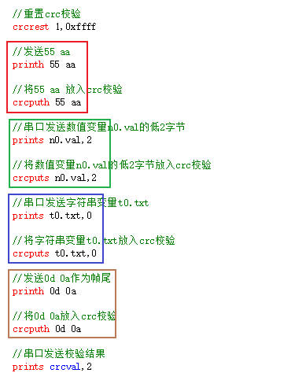

程序中使用CRC校验数据
(1.60.1及其以上上位机版本支持,目前仅支持crc-16/modbus)
使用crc校验的步骤
初始化crc校验
//初始化crc
crcrest 1,0xffff
使用crcputh/crcputs/crcputu将需要的数据放入校验
crcputh的用法参考printh
crcputs的用法参考prints
//将0x03 0x25放入crc校验
crcputh 03 25
//将字符串"aaa"放入crc校验
crcputs "aaa",0
//将字符串t0.txt放入crc校验
crcputs t0.txt,0
//将字符串t1.txt的前6个字节放入crc校验
crcputs t1.txt,6
//将数值16的低2字节放入crc校验
crcputs 16,2
//将数值n0.val放入crc校验
crcputs n0.val,0
//将数值n1.val的低2字节放入crc校验
crcputs n1.val,2
//将串口缓冲区的第5个字节开始的24个字节放入crc校验
crcputu 5,24
获取crc计算结果
crcval变量即为计算结果，可以随时获取
//将crcval的数据发送出去
prints crcval,2
crc校验示例
未进行校验的代码如下所示
//发送55 aa 作为帧头
printh 55 aa
//串口发送数值变量n0.val的低2字节
prints n0.val,2
//串口发送字符串变量t0.txt
prints t0.txt,0
//发送0d 0a作为帧尾
printh 0d 0a
将上方的代码添加crc-16校验并发送出去
//重置crc校验
crcrest 1,0xffff
//发送55 aa
printh 55 aa
//将55 aa 放入crc校验
crcputh 55 aa
//串口发送数值变量n0.val的低2字节
prints n0.val,2
//将数值变量n0.val的低2字节放入crc校验
crcputs n0.val,2
//串口发送字符串变量t0.txt
prints t0.txt,0
//将字符串变量t0.txt放入crc校验
crcputs t0.txt,0
//发送0d 0a作为帧尾
printh 0d 0a
//将0d 0a放入crc校验
crcputh 0d 0a
//串口发送校验结果
prints crcval,2
在大部分的应用场景下，crc校验仅仅是将printh改成crcputh，prints改为crcputs

注意
注意放入crc校验中变量的长度
crcputs n0.val,3，crcputs n0.val,2，crcputs n0.val,1和crcputs n0.val,0得出的crc校验值是完全不同的4个值！
串口屏计算出来的crc结果和单片机计算出来的结果不同如何排查
借助网上的crc在线校验工具，先计算出标准的modbus-crc16的值，然后对比一下是串口屏计算出来的crc有问题还是单片机计算出来的crc有问题，针对问题修改代码即可
crc校验-样例工程下载
演示工程下载链接：